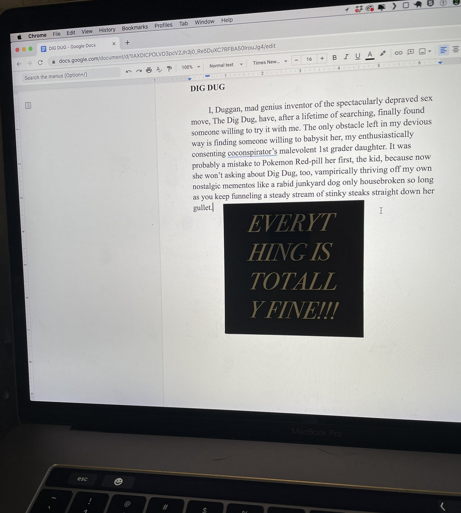
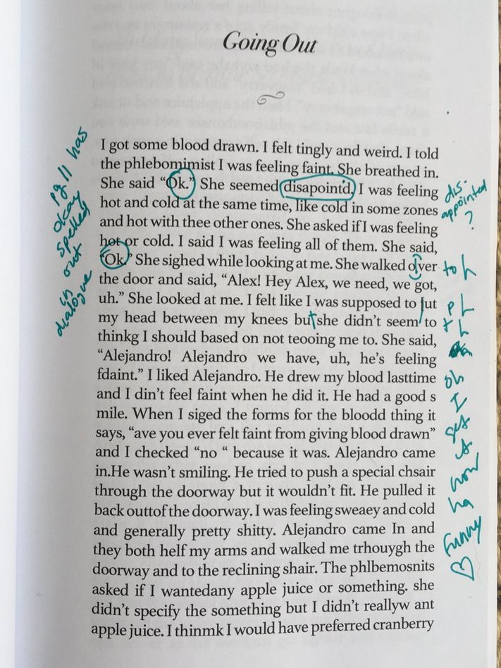

⚑⚑⚑☀⚑
ZAC SMITH IS MY DAD
everything is totally fine/a>< +
two million shirts + ☄ +
50 barn poems +
no future tshirt blog +
highlight of the week +
interviewed by aurora huiza + ☈ +
taking care +
ohhh + ☈ +
zac smith on normal life +
the celebration + ☉ +
wind storm +
interviewing blake middleton again +
tomatoes // this fucking dresser +
acknowledgements + ⚆ +
3 smallies +
the first millennial president +
talking about "the lover" by joy williams on no edit +
scaffolding +
hold music +
interviewing joe bielecki +
today is totally fucked 2 + ⚱ +
healthy, fit, and fulfilled +
five barn poems +
the end +
the egg +
public transportation +
interview with noah cicero +
gargoyle + ♺ +
loss +
interview with lars iyer +
three blurbs +
interview with troy james weaver +
a beautiful hill +
tomorrow +
yield +
barn poem 40 +
the in-school suspension supervisor +
in-flight magazine + ♨ +
interview with lindsay lerman +
flipped +
everyone who dies goes to hell +
interview with big bruiser dope boy +
two smallies +
interviewed by nick farriella +
$$$ +
thequaranzine.pdf +
interview w/ giacomo, cavin, mike, and elizabeth ellen +
hey buddy.pdf +
thequaranzine2.pdf +
interview with benjamin devos +
no future + ☃ +
interview on get lit with leza +
vienna poem +
doors + ⚽ +
interview with bud smith +
head +
interview with brian alan ellis +
interview on malarkey public radio + ☁ +
the hanged man +
interview with sam pink +
family poems +
the building is on fire +
before bed +
the man in the basement +
bugs +
interview with blake middleton +
little birds + ☻ +
the lord of the beasts +
haipu.pdf +
three smallies +
interview on writing the rapids +
freedom is an abstract entity that interacts with the world in concrete ways
email zacsmithflieskites at everyone's favorite google-owned email service provider ⚘
 